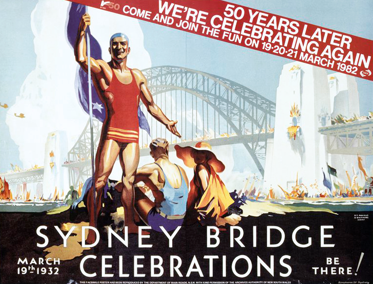
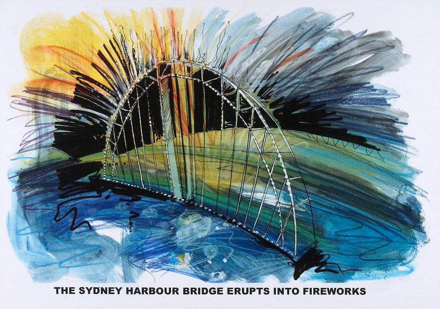
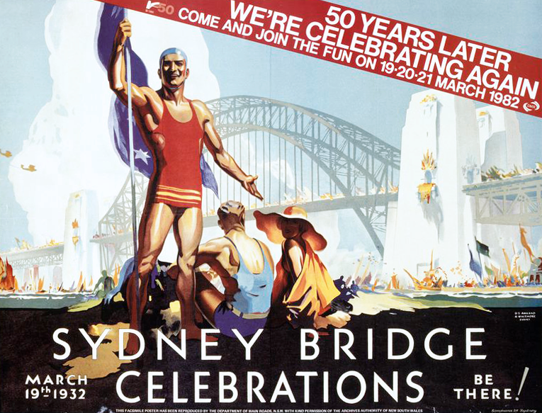
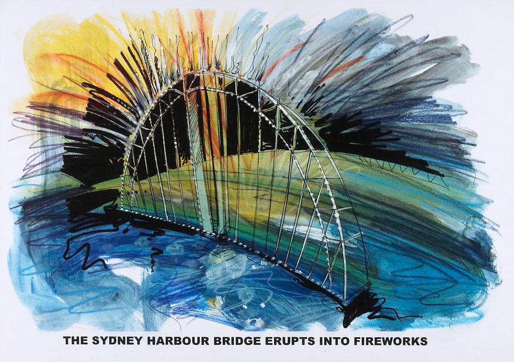

The use
1932 – 2022
↓
1968

Negatives of P & O liner Canberra by David Mist, 1968
1993
Colour transparencies (6), for cover of Telecom white pages, film, David Mist, Sydney, 1993. Three models in evening wear with Sydney Opera House and Sydney Harbour Bridge in the background, fashion by Studibaker Hawke.
Collection of transparencies depicting Telecom white pages photographed by David Mist
 


